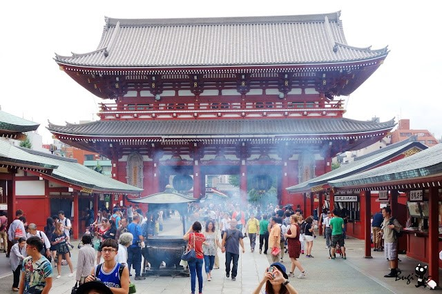

神社、神宮與寺廟
神社
神宮
寺廟
神社
神社前都會有道大大的鳥居，供奉的對象眾多繁雜，因日本人認為自然界萬物皆可敬之，從無生命的物體（如被神明附著的石頭）、各種動物（如天狗、狐狸），到傳說人物或歷史人物（如坂本龍馬、戰死的軍官）皆是如此，信奉的是日本民間獨特的「神道」。普通神社的佔地並不大，如果是大型神社則可稱為「大社」，如以千本鳥居聞名的「伏見稻荷大社」。

神宮
神社如果祭祀的對象則是日本皇室祖先，或與皇室有相當淵源之人，就稱為「神宮」。因為祭祀對象與皇室的關係，神宮的規模與規劃通常比普通神社大上許多，也比較氣派、整理較好，如東京的明治神宮、京都的平安神宮。因為算是神社的一種，因此神宮內也有鳥居。
寺廟
日本寺廟與神社不同，入口處沒有鳥居，且「寺」內供祭的是「佛教」神祇，如釋迦摩尼、觀世音菩薩、如來等，信眾可拈香參拜，寺內有出家的和尚，有時也可見墓碑。日本知名的寺廟有許多，如東京的淺草寺、京都的清水寺。
